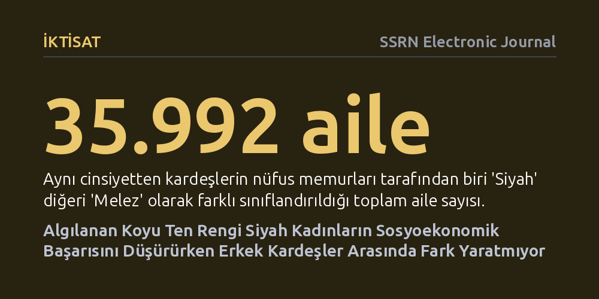

IKTISAT · SSRN Electronic Journal · 2026-10-10
Araştırmacılar, 1870-1940 ABD nüfus sayımlarını kullanarak aynı ailede farklı ten rengiyle kaydedilen kardeşlerin sosyoekonomik durumunu inceledi. Koyu tenli kadınların eğitim ve evlilik kazanımları belirgin biçimde düşerken, erkek kardeşler arasında ten rengine dayalı doğrudan bir fark görülmedi.
Irk temelli ayrımcılığın tek tip işlemediğini; kadınların doğrudan ten rengi tonuna göre dışlandığını, erkeklerin ise ten rengi tonundan bağımsız olarak toptan ayrımcılığa maruz kaldığını gösterir.

Tarihsel ırk araştırmalarında Afrika kökenli Amerikalıların maruz kaldığı ayrımcılık çoğu zaman homojen ve tek tip bir deneyim olarak varsayılır. Oysa aynı ırksal kategori içinde yer alan bireyler arasında ten renginin açıklığı veya koyuluğunun ekonomik fırsatları nasıl etkilediği, hem iktisatçıların hem de sosyologların uzun süredir tartıştığı temel bir meseledir. ABD nüfus verileri, açık tenli siyahilerin genel nüfusta daha yüksek gelir ve eğitim seviyesine ulaştığını gösterse de bu tablonun doğrudan ten tonuna yönelik önyargılardan mı, yoksa daha zengin ve ayrıcalıklı ailelerden gelmelerinden mi kaynaklandığını belirlemek zordur.
Bu iki mekanizmayı birbirinden ayırmak büyük bir öneme sahiptir. Eğer aradaki uçurum yalnızca aile kökenine dayanıyorsa sorun geçmişten devralınan kuşaklararası sermaye ve fırsat eşitsizliğidir. Ancak aynı aile ortamında büyüyen bireyler dahi tenlerinin açıklığına göre farklı sonuçlarla karşılaşıyorsa, bu durum piyasaların ve toplumun doğrudan ten rengi tonuna göre aktif bir ayrımcılık uyguladığını kanıtlar.
Araştırmacılar, bu nedensellik bağını netleştirebilmek için 1870 ile 1940 yılları arasındaki eksiksiz ABD federal nüfus sayımı kayıtlarını inceledi. Dönemin nüfus sayımlarında görevliler, bireyleri yalnızca "Siyah" olarak değil, görsel gözlemlerine dayanarak "Melez" (Mulatto) olarak da ayrı bir kategoride kaydediyordu. Yazarlar, bu devasa veri tabanında aynı anne babaya sahip ve aynı hanede büyüyen, ancak sayım memurları tarafından biri "Siyah" diğeri "Melez" olarak kodlanan 35.992 aile belirledi.
Aynı cinsiyetten kardeşlerin karşılaştırılması, araştırmacılara aileye özgü ekonomik durumu, yetiştirilme tarzını ve paylaşılan genetik mirası tamamen sabit tutma fırsatı verdi. Sayımlar arasında kişilerin izi sürülerek bu kardeşlerin yetişkinlik dönemindeki eğitim seviyeleri, evlilik durumları ve eşlerinin sosyoekonomik konumları karşılaştırıldı. Böylece aile dışındaki dünyanın algıladığı ten renginin yarattığı bağımsız etki doğrudan ölçülebildi.
Elde edilen bulgular, ten rengi algısının sonuçlarının cinsiyete göre radikal bir biçimde ayrıştığını ortaya koydu. Kız kardeşler arasında yapılan karşılaştırmada, memurlar tarafından "Siyah" olarak kodlanan daha koyu tenli kadınların, "Melez" olarak kodlanan kız kardeşlerine göre belirgin şekilde daha düşük eğitim düzeyine sahip olduğu belirlendi. Ayrıca bu kadınların evlenme ihtimalleri daha düşüktü ve evlendiklerinde de eşleri daha az eğitimli ve muhtemelen daha düşük kazançlı erkeklerden oluşuyordu.
Buna karşın erkek kardeşler karşılaştırıldığında tablo tamamen değişti. Biri açık diğeri koyu tenli olarak sınıflandırılan erkek kardeşlerin eğitim süreleri, evlilik oranları ve nihai gelir düzeyleri arasında istatistiksel olarak anlamlı bir fark görülmedi. Genel toplumda koyu tenli erkeklerin daha az kazanması, onların kendi ten renklerine yönelik anlık ayrımcılıktan değil; yetiştikleri ailelerin daha kısıtlı kaynaklara sahip olmasından kaynaklanıyordu.
Bu çarpıcı cinsiyet farkı, dönemin toplumsal ve yasal yapısındaki mekanizmaları aydınlatmaktadır. Erkekler açısından o dönemde geçerli olan "tek damla" (one-drop) kuralı belirleyiciydi; yani bilinen herhangi bir siyah ataya sahip olan tüm erkekler ten rengi tonuna bakılmaksızın aynı ırk kategorisine hapsediliyor ve iş gücü piyasasında toptan bir dışlanmaya uğruyordu. Açık tenli olmak, erkek kardeşleri kurumsal ırkçılıktan korumaya yetmiyordu.
Kadınlar için ise durum farklıydı; estetik normlar ve evlilik piyasasının dinamikleri ten rengi tonuna dayalı ayrımcılığı doğrudan devreye sokuyordu. Koyu tenli kadınlar hem ırkları hem de ten tonları nedeniyle çifte bir engelle karşılaştı. Çalışma, ırkçılığın tek parça bir olgu olmadığını, cinsiyet rolleri ve toplumsal kurumların kesişiminde bambaşka biçimlerde tezahür ettiğini ampirik olarak kanıtlamaktadır.